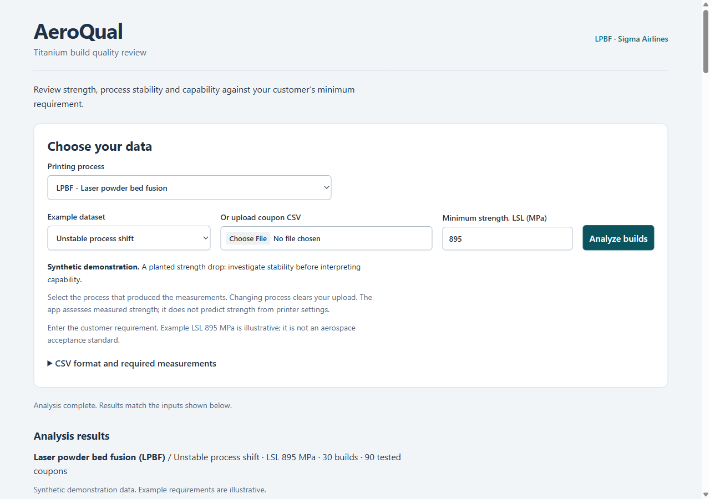
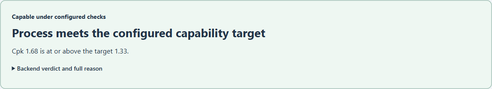
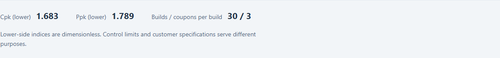
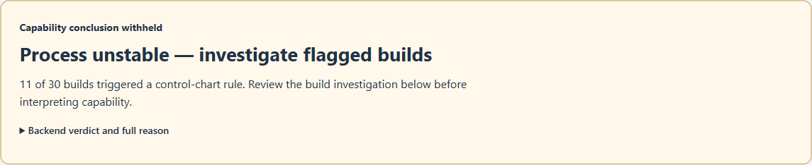
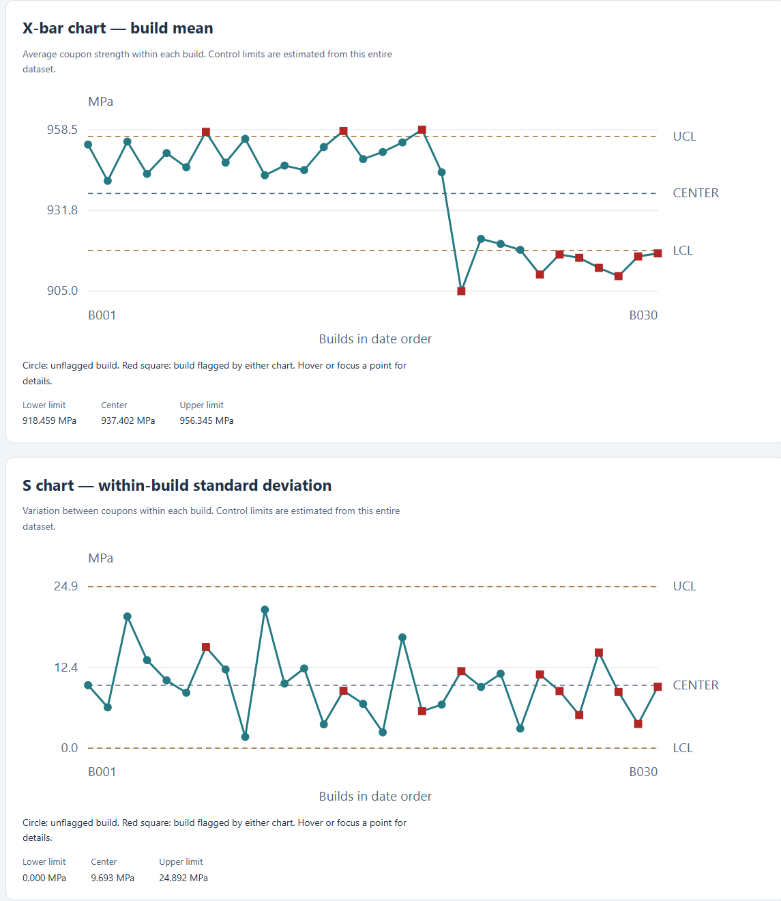
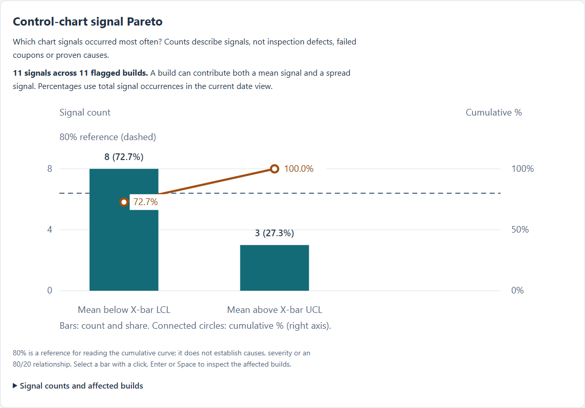
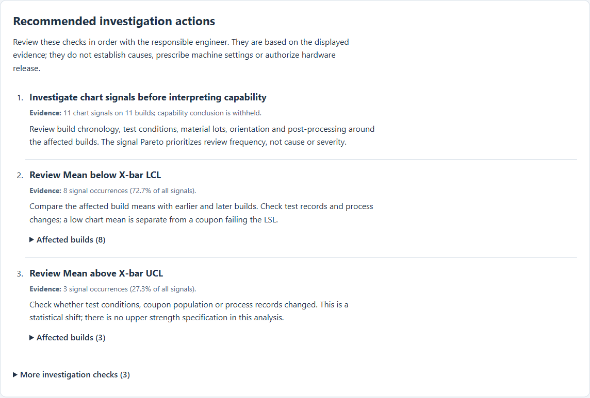
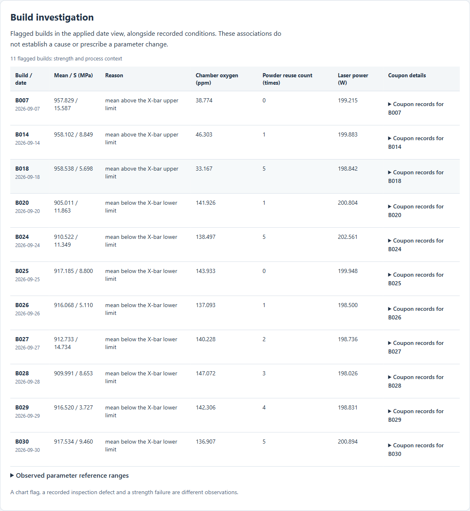
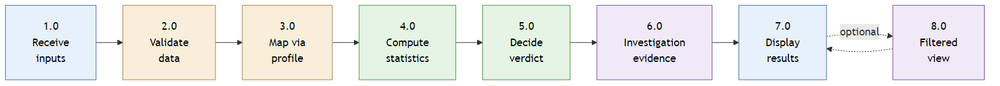

The problem
"An aerospace contractor 3D-printing titanium brackets is failing client strength tests. They don't currently track enough environmental and stress parameters against final part strength. Design a tool to monitor and flag when and whether the printing process is capable of meeting strict aerospace tolerances, and help contractors resolve these issues."
Is the process stable?
X-bar and S control charts, with each build as a subgroup, flag builds whose average strength or within-build spread is unusual.
Can it meet the requirement?
Lower-side Cpk and Ppk compare strength with the customer's minimum (LSL), and a verdict says capable, not capable, or not assessable yet, always with the reason.
Where should we look?
Coupon failure counts, Pareto charts of chart signals and inspection defects, recorded printer conditions for flagged builds, and ordered investigation actions.
Built for the quality engineer who reviews each tested build. Four printing processes are supported: laser powder bed fusion (LPBF), wire arc additive manufacturing (WAAM), electron beam powder bed fusion (EB-PBF) and powder-fed laser directed energy deposition (DED).
Try it in 2 minutes
Nothing to install. Open the live app, then:
1Choose the process
Leave LPBF selected, or pick WAAM, EB-PBF or laser DED.
2Pick an example
Choose Stable and capable in "Example dataset" (or upload your own CSV).
3Analyze
Keep the minimum strength at 895 MPa and select Analyze builds.
Then compare the three LPBF examples
| Example | Verdict | Cpk | Ppk | Failures | How to read it |
|---|---|---|---|---|---|
| Stable and capable | capable | 1.683 | 1.789 | 0 / 90 | No flagged builds and Cpk above the 1.33 target: the process can meet the requirement. |
| Stable but not capable | not capable | 0.312 | 0.331 | 17 / 90 | Stable, but too close to the minimum. Stability and meeting the requirement are separate questions. |
| Unstable process shift | not assessable | 1.292 | 0.712 | 0 / 90 | Strength drops from build B020 while chamber oxygen rises; 11 builds are flagged, so capability is withheld until the shift is investigated. |
30 builds × 3 coupons each, LSL 895 MPa. The written walkthrough has every number, the chart limits and the flagged-build table.
What it looks like
Screenshots of the live app on the LPBF examples.









How it works
Python computes every number; the web page only draws them. The statistics live in one tested function,
app/qc.py, checked against a hand-worked example and a constant-data case.

The statistics
Each build: mean x̄ and standard deviation s of its n coupons X-bar limits = grand mean ± A3 · s̄ S limits = B3 · s̄ to B4 · s̄ (c4, A3, B3, B4 from n) σ_short = s̄ / c4 σ_total = standard deviation of all coupons Cpk = (grand mean − LSL) / (3 · σ_short) Ppk = (grand mean − LSL) / (3 · σ_total) Failure rate = coupons below the LSL / all couponsThe verdict, checked in this order
- Not assessable if there is no variation, if any build is flagged (unstable), or if there are fewer than 25 builds.
- Otherwise capable if Cpk ≥ 1.33, else not capable. Both thresholds can be changed.
Control limits come from all builds in the file. In the unstable example this also flags a few early builds (B007, B014, B018) that sit just above the upper limit, because the shift pulls the centre line down. Pareto charts and date-range views count and describe; they never change a limit, an index or the verdict.
Inputs
One CSV row per tested coupon, plus the customer's minimum strength. Everything a quality engineer already has.
| Input | Required? | Meaning |
|---|---|---|
build_id | yes | Which build the coupon came from |
build_date | yes | Build date, YYYY-MM-DD (orders the builds) |
uts_mpa | yes | Ultimate tensile strength from the test, MPa |
| LSL | yes | Customer's minimum strength, MPa (entered in the app) |
| Process settings | optional | For example chamber oxygen, powder reuse and laser power for LPBF; arc current and wire feed for WAAM |
primary_defect | optional | Inspection result per coupon, for the defect Pareto |
Example datasets
16 synthetic datasets, clearly labelled as invented: three scenarios plus an inspection example for each process. All at LSL 895 MPa. The codebook explains every file, column and unit, and how the data would be collected for real.
| Process | Stable and capable | Stable but not capable | Unstable shift |
|---|---|---|---|
| LPBF | capable · Cpk 1.68 | not capable · Cpk 0.31 | not assessable |
| WAAM | capable · Cpk 1.91 | not capable · Cpk 0.31 | not assessable |
| EB-PBF | capable · Cpk 2.54 | not capable · Cpk 0.40 | not assessable |
| Laser DED | capable · Cpk 1.39 | not capable · Cpk 0.23 | not assessable |
Learn more
Interactive tutorial
14 lessons with every example, CSV downloads, chart and Pareto exercises. Works offline.
Engineering brief
A one-page summary for engineering leads, with comparisons and drill-downs.
Written walkthrough
Every dataset step by step, with the exact numbers and how to read them.
README and API
Setup, every input and parameter, the API routes (/docs on the live app) and the tests.
Limits
- All example data and the 895 MPa limit are synthetic and illustrative, not an aerospace standard.
- Decision support only: it does not certify hardware or authorize release.
- Process conditions next to flagged builds are associations to investigate, not proven causes.
- Builds need the same number of coupons; only a lower specification limit is supported.